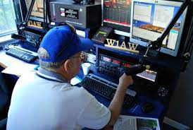

The Arts, A/V Technology & Communication career cluster can best be described as a group of paths that are designed to get information and entertainment to the masses of people like you and I.
Some pathways in this career cluster are Journalism, Telcom Tech, Video Production, Performing Arts, and Graphic Design. Here are the in-depth descriptions of each pathway!
The Journalism pathway often involves the skills of researching, fact-checking, and delivering news in different formats. The ways that they can do this are having a podcast, writing an article, editing a blog on Wikipedia, and news casting on a platform like news reporters on CNN or FOX4.
Also, an example of a job in Journalism is a Radio Operator, and the only levels of pre-requisite education are a High School diploma or a GED, or something equivalent. Lastly, some key facts are that this occupation has negative growth over the next decade, and the average salary for this job is $44,490 per year. Also, here's a photo of a Radio Operator!

The Telcom Tech Pathway is what makes it possible for people to call each other on phones or use the internet. People in this pathway oversee individuals' and businesses' telecommunication networks, which can include telephones, internet, cable, and specified office equipment.
Also, an example of a job in this pathway is a Telecommunications Line Installer and Repairer, and the prerequisite education required is a high school diploma or something similar. Lastly, the job growth is projected to experience low growth over the next decade, and the average salary for this job is $46,240 per year.
The Video Production pathway involves planning radio, television, stage, or movie productions. This career path also includes working with technology to edit film or photographs, directing motion pictures and animation, and producing visual media content like a short film, interview, documentary, or set design for a play. Also, some more well-known jobs for this pathway are YouTubers, Movie Producers, and content creators!
Also, an example of a job in this pathway is a Motion Picture Projectionist. This career occupation doesn't require any education and sadly has negative growth projected over the next decade. Lastly, the average pay for this job is $24,380 per year, and there has been low Job presence in the state of Texas.
The Performing Arts pathway combines creative talent with performance (like dance or theater), sound (like vocalists or musicians), visual art (like sculpting or drawing), or entertainment (like acting or comedy). You might study and practice dance or art history, attend auditions and casting calls to audition for roles, or plan and schedule rehearsals, art exhibitions, and performances.
Also, an example of a job in this pathway is a Public Address System and Other Announcers. This job requires a high school diploma or equivalent to qualify for the job. Also, this occupation has an expected low growth in the next decade and also has low Job presence in our city. Lastly, this job has an average salary of $32,830 per year.
The Graphic Design pathway combines art with technology. Both artistic and computer techniques are used to create a wide variety of design projects, like digital animation, designing advertisements, creating artwork for social media or branding, photo editing, and typography.
Also, an example of a job in this pathway is a Craft Artist. This job has low growth over the next decade. Lastly, the average pay for this job is $31,360 per year.